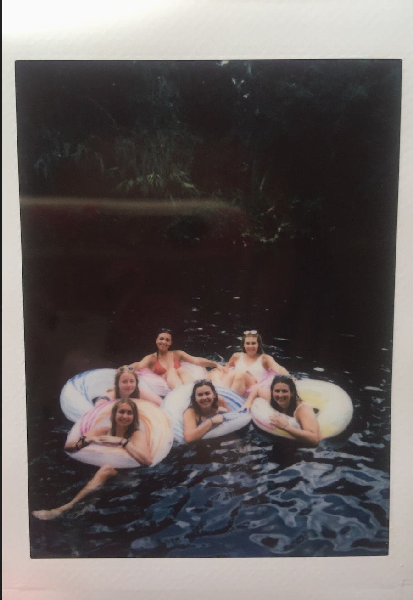

<div class="container py-5">
  <!-- Card 0-->
  <div class="card mb-5 p-3 border-light hidden">
    <div class="row">
      <div class="col-md-4 d-flex align-items-center">
        
      </div>
      <div class="col-md-4 d-flex align-items-center">
        
      </div>
      <div class="col-md-4 d-flex align-items-center">
        
      </div>
      <!-- <div class="col-md-7 px-3 d-flex align-items-center">
          <div class="card-block px-6 m-4">
            <h2 class="card-title uppercase">
              Re-designing the ladies' restroom
            </h2>
            <br />
            <p class="card-text h4">
              Women wait on average over 6 minutes to use a public bathroom.
              Men wait an average of 11 seconds. HMW improve this experience
              for women?
            </p>
            <br />
            <a
              href="pages/loo.html"
              class="mt-auto btn btn-dark btn-lg uppercase"
              >View Project</a
            >
          </div>
        </div> -->
    </div>
  </div>
</div>
